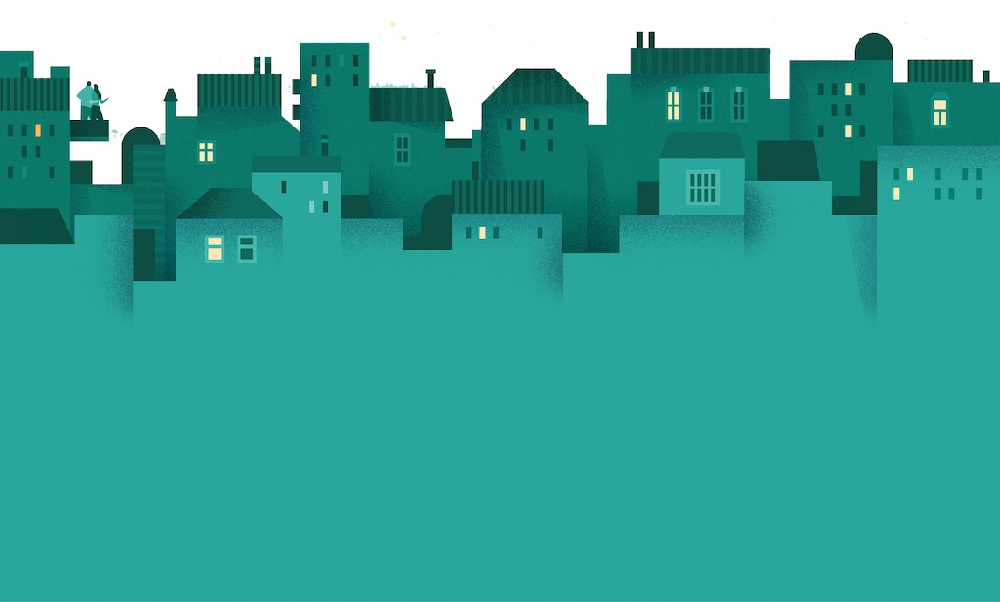

<md-dialog aria-label="Reporte" ng-cloak style="z-index: 99999;">

    <!-- Container for the progress state -->
    <div layout="row" layout-sm="column" layout-align="space-around" ng-show="vm.isLoading" >
        <md-progress-circular md-mode="indeterminate" md-diameter="100px"></md-progress-circular>
    </div>

    <!-- Container for the form input -->
    <div ng-hide="vm.isLoading">
        <md-toolbar ng-style="{ 'background-color': vm.getReportLevelColor() }">
            <div class="md-toolbar-tools">
                <h2 >Event</h2>
                <span flex></span>
                <md-button class="md-icon-button" ng-click="vm.cancel()">
                    <md-icon md-svg-src="images/close_white.svg" aria-label="Close dialog"></md-icon>
                </md-button>
            </div>
        </md-toolbar>
        <md-dialog-content>
            <div class="md-dialog-content">
                <!-- Form for creating the given report  -->
                <h2 style="margin-top: 0px;">Choose the one that best describes the event:</h2>
                <!-- Options for the danger level -->
                <md-radio-group ng-model="vm.danger_selection" ng-show="vm.level === 4">
                    <md-radio-button value="Robbery">Robbery</md-radio-button>
                    <md-radio-button value="Shooting">Shooting</md-radio-button>
                    <md-radio-button value="Gunman">Gunman</md-radio-button>
                    <md-radio-button value="Suspicious Activity">Suspicious Activity</md-radio-button>
                    <md-radio-button value="Other">Other</md-radio-button>
                </md-radio-group>

                <!-- Options for the warning level -->
                <md-radio-group ng-model="vm.caution_selection" ng-show="vm.level === 3">
                    <md-radio-button value="Power Outgage">Power Outgage</md-radio-button>
                    <md-radio-button value="Flood">Flood</md-radio-button>
                    <md-radio-button value="Lost a Relative">Lost a Relative</md-radio-button>
                    <md-radio-button value="Other">Other</md-radio-button>
                </md-radio-group>
            </div>
        </md-dialog-content>
        <md-dialog-actions layout="row">
            <span flex></span>
            <md-button ng-click="vm.cancel()" style="margin-right:20px;">
                Cancel
            </md-button>
            <md-button ng-click="vm.continueCreation( $event )" class="md-warn" style="margin-right:20px;">
                Next
            </md-button>
        </md-dialog-actions>
        <!---->
    </div>
</md-dialog>